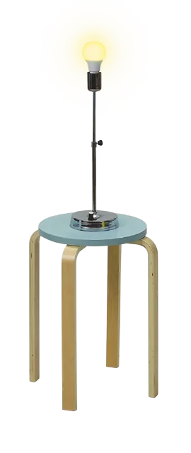
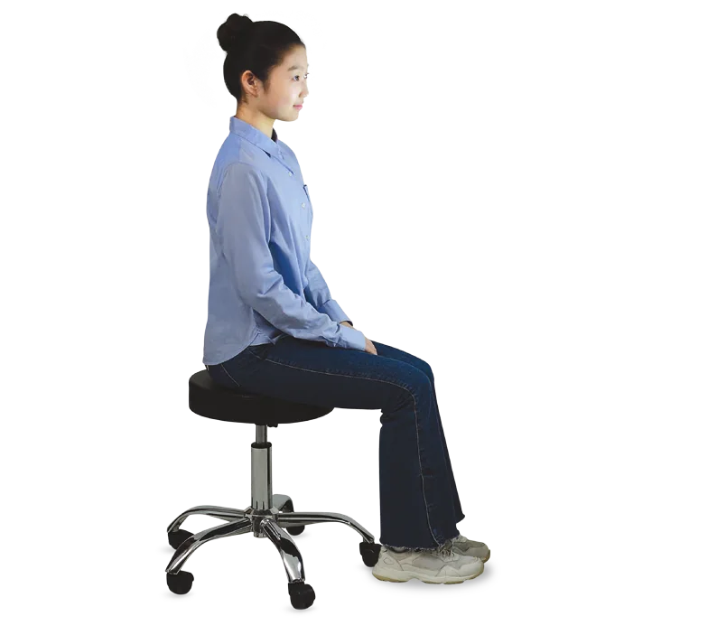
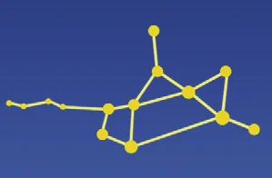
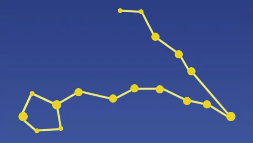
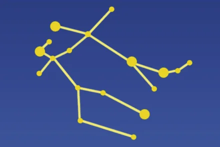
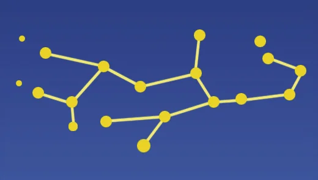
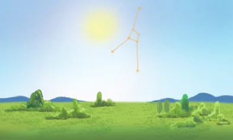
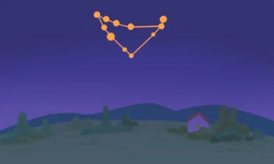

들어가기교과서 246쪽
이전 단원 확인하기빈칸에 들어갈 알맞은 단어를 골라 써 보자.
보기: 북극성, 천구
- 1북반구의 북쪽 하늘에서 별들은 북극성을 중심으로 시계 반대 방향으로 운동한다.
- 2밤하늘에서 별들이 붙어 있는 것처럼 보이는 가상의 둥근 하늘을 천구라고 한다.
이 단원을 배우면
· 지구의 공전을 우주에서 바라보는 관점으로 설명할 수 있다.
생각 깨우기저건 물고기자리야!
물고기자리가 봄철에 보기 어려운 까닭은 무엇일까?
봄철에는 물고기자리가 태양과 같은 방향에 있어 태양 빛 때문에 볼 수 없다. 하지만 가을철에는 태양 반대편에 있기 때문에 잘 관측된다.
계절에 따라 보이는 별자리가 달라지는 까닭 알아보기교과서 246쪽 · 해 보기
해 보기준비와 과정
준비물 | 전등, 전등 받침대, 회전의자, 계절별 별자리판
- 가운데에 전등과 회전의자를 놓고, 그 주위에 궁수자리, 물고기자리, 쌍둥이자리, 처녀자리가 그려진 계절별 별자리판을 90° 간격으로 설치한다.
- 관찰자는 회전의자에 앉아 (가)에서 (라) 방향으로 전등 주위를 돌며 전등 쪽에 있는 별자리와 전등 반대쪽에 있는 별자리를 관찰해 보자.



궁수자리
물고기자리
쌍둥이자리
처녀자리모형 따라 하기(가)~(라) 위치로 옮겨 보자
버튼을 누르면 관찰자가 (가) → (나) → (다) → (라) 방향, 곧 지구의 공전 방향으로 이동한다.
정리
- 1(가)~(라) 위치에서 태양 쪽에 있는 별자리와 태양 반대쪽에 있는 별자리를 써 보자.
구분 태양 쪽에 있는 별자리 태양 반대쪽에 있는 별자리 (가) 쌍둥이자리 궁수자리 (나) 처녀자리 물고기자리 (다) 궁수자리 쌍둥이자리 (라) 물고기자리 처녀자리 - 2계절에 따라 보이는 별자리가 달라지는 까닭을 지구의 움직임과 관련지어 설명해 보자.
지구가 공전함에 따라 천구상에서 태양의 반대쪽에 위치한 별자리가 달라진다. 따라서 계절에 따라 보이는 별자리가 달라진다.
태양의 연주 운동교과서 247쪽 · 그림 Ⅶ-8
지구의 공전과 태양의 연주 운동
지구는 태양 주위를 서쪽에서 동쪽으로 1년에 한 바퀴씩 공전한다.
계절에 따라 잘 보이는 별자리가 달라지는 까닭
태양 쪽에 있는 별자리는 태양 빛 때문에 관측하기 어렵고, 태양의 반대쪽에 있는 별자리는 한밤중에 남쪽 하늘에서 잘 관측된다. 따라서 지구가 공전하면 태양이 보이는 위치가 달라지면서 계절에 따라 잘 관측되는 별자리가 달라진다.


물고기자리가 태양 쪽에 있는 달은 언제인가? → 4월
공전하는 지구와 황도 12궁우주에서 내려다본 모습
별자리와 태양, 지구의 크기와 거리는 실제 비율과 다르다. 교과서 그림 Ⅶ-8과 같은 기준으로 나타냈다.
확인하고 정리하기교과서 247쪽
스스로 확인하기
- 1지구는 태양 주위를 동쪽에서 서쪽으로 공전한다. ( ○, ✕ ) → ✕ 지구는 서쪽에서 동쪽으로 공전한다.
- 2태양의 연주 운동은 태양이 별자리 사이를 1년에 한 바퀴씩 서쪽에서 동쪽으로 이동하는 겉보기 운동이다.
- 3의사 결정 능력 | 천체 관측 프로그램을 이용하여 자신의 생일 무렵에 태양 쪽에 있는 별자리와 한밤중에 남쪽 하늘에서 잘 관측되는 별자리를 찾아 친구들과 이야기해 보자.
(예시) 내 생일인 11월 15일에 태양 쪽에 있는 별자리는 천칭자리이다. 한밤중 남쪽 하늘에서는 태양의 반대쪽에 있는 양자리가 잘 관측된다.
위 시뮬레이션의 날짜 막대를 자기 생일로 옮겨서 찾아보자.
추가 확인 문제알맞은 것을 보기에서 골라 보자.
보기: 태양의 연주 운동, 지구의 공전, 지구의 자전, 별의 연주 운동
- 1태양이 별자리 사이를 서쪽에서 동쪽으로 이동하여 1년 후 같은 위치로 되돌아오는 겉보기 운동 → 태양의 연주 운동
- 21의 현상이 나타나는 까닭 → 지구의 공전
- 3별들이 북극성을 중심으로 하루에 한 바퀴씩 도는 것처럼 보이는 까닭 → 지구의 자전
O / X 확인문장이 옳으면 O, 옳지 않으면 X
② 같은 방향(서쪽 → 동쪽)이다. ④ 8월에 게자리는 태양 쪽에 있어 보기 어렵고, 반대쪽의 염소자리가 잘 보인다.
배운 내용 정리하기 · 자전과 공전 비교
| 지구의 자전 | 지구의 공전 | |
|---|---|---|
| 방향 · 주기 | 서 → 동, 하루에 한 바퀴 | 서 → 동, 1년에 한 바퀴 |
| 나타나는 겉보기 운동 | 천체의 일주 운동 | 태양의 연주 운동 |
| 관측되는 현상 | 별이 북극성 중심으로 회전 태양이 동쪽에서 떠서 서쪽으로 짐 | 계절에 따라 한밤중에 보이는 별자리가 달라짐 |
다음 시간에는
‘3. 달의 위상 변화’에 대해 알아보자. (교과서 248~251쪽)